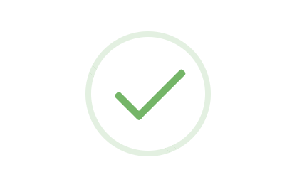

<ion-header>
  <ion-toolbar class="header">
    <ion-buttons slot="start">
      <ion-menu-button></ion-menu-button>
    </ion-buttons>
    <ion-title>
      ลงทะเบียน
    </ion-title>
  </ion-toolbar>
</ion-header>


<ion-content class="mycss1">
  <ion-card class="cardcss">
    <ion-col>
      <ion-row>
      <div class="progressbar">
        <ul>
          <li>
            <fa-icon [icon]="['fas', 'circle']"></fa-icon>
            <p style="font-size: 10px">ลงทะเบียนเครื่อง AED</p>
          </li>
          <li>
            <fa-icon [icon]="['fas', 'circle']"></fa-icon>
            <p style="font-size: 10px">รหัสประจำเครื่อง</p>
          </li>
          <li>
            <fa-icon [icon]="['fas', 'check-circle']"></fa-icon>
            <p style="font-size: 10px">เสร็จสิ้น</p>
          </li>
        </ul>
      </div>
      </ion-row>
      <ion-row>
      <ion-avatar style="width: 200px; height: 200px; margin: auto;">
        
      </ion-avatar>
      </ion-row>
      <div style="margin-bottom: 20px;">
      <ion-row>
        <ion-label style="position: relative; margin: auto; font-size: 20px;">
          ลงทะเบียนเครื่อง AED เสร็จสิ้น
        </ion-label>
      </ion-row>
      </div>
      <div style="margin-bottom: 40px;">
        <ion-row>
          <ion-label style="position: relative; margin: auto; font-size: 10px; color: brown;">
            หมายเหตุ: เช็คสถานะการลงทะเบียนของเครื่องได้ที่เมนู เครื่อง AED ของฉัน
          </ion-label>
        </ion-row>
      </div>
      <ion-row>
      <ion-button (click)="goToHome()" class="mycss1" style="margin: auto;">
        บันทึก
      </ion-button>
      </ion-row>
    </ion-col>
  </ion-card>
</ion-content>
